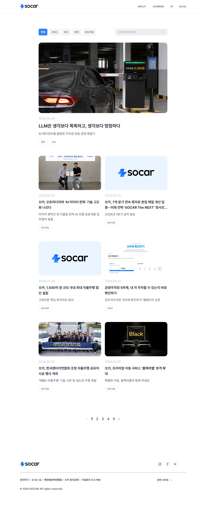

WORK · 01 · CORPORATE
쏘카 코퍼레이트 블로그
그리고 메인 진입 영역
'블로그가 없다'가 아니라 '쏘카의 이야기가 흩어져 발화된다'를 문제로 재정의한 프로젝트 — 시스템은 그대로 상속해 구축·운영 비용을 동시에 누르고, 메인 진입과 카드 위계만 새로 짰습니다.
(STORY · 01 → 02 → 03)
분산 콘텐츠를
단일 채널로.
분산은 표면,
발화 일관성이 본질.
진짜 문제는 '블로그가 없다'가 아니었습니다. 채용·문화·기술 콘텐츠가 5+ 페이지에 흩어져 — 같은 회사의 이야기가 매번 다른 톤으로 발화되고 있었습니다. 독자가 쏘카를 인지하는 단위가 페이지마다 끊기는 구조였고, 메인에서 콘텐츠로 가는 진입점도 부재했습니다.
새로 만들지 않는다,
가장 비싼 자산을 상속한다.
새 채널을 위해 별도 비주얼 언어를 만드는 안과 모채널 시스템을 그대로 상속하는 안을 비교했습니다. 전자는 정체성이 또렷해지지만 구축·운영·디자인 부채가 동시에 늘어납니다. 이미 사용자에게 학습된 자산을 다시 만들 이유가 약하다고 판단해 시스템은 100% 상속하고, 차별점은 '진입 동선'과 '카드 위계' 두 레이어에만 집중했습니다. 5개 카테고리는 햄버거가 아닌 상단 고정 탭으로 — 탐색을 한 번의 시선 안에 끝내기 위함입니다.
화면이 아니라
'운영이 흔들리지 않는 골격'을 남긴다.
최종 산출물의 가치는 디자인된 3개 화면이 아닌, 카테고리가 5→10→20으로 늘어도 위계가 무너지지 않는 카드 규칙에 있습니다. 운영팀이 디자인에 다시 의존하지 않고도 새 글을 올릴 수 있도록 카드/리스트 위계, 반응형 분기, 메인 진입 영역 컴포넌트를 1세트로 묶어 넘겼습니다.
Project Goal
분산된 콘텐츠를 모으고,
균일한 카드 위계로 정돈
-
AS-IS블로그 채널 자체가 없고 콘텐츠가 페이지마다 분산TO-BE5개 카테고리 고정 탭으로 단일 블로그 채널 신설
-
AS-IS코퍼레이트 메인에서 콘텐츠로 가는 진입점 부재TO-BE메인 상단 블로그 진입 영역 신설
-
AS-IS카테고리마다 카드 비율·여백이 들쭉날쭉TO-BE균일한 카드 위계와 반응형 규칙
Deliverables
화면 미리보기

1440px · 메인 + 블로그 풀페이지 — 스크롤하여 확인
768px · 2단 그리드 카드 레이아웃

375px · 1단 카드 · 고정 탭 유지